Find your next starting point.
Every guide is free to read, keep, and share.
Vols 1–10: two editions
Every volume here comes in two clearly labelled editions. Claude Edition is the expanded edition, written by Claude (Anthropic's AI) in Claude Code. Grok Edition is the concise edition, revised and fact-checked by Grok Bot.
-
Vol. 01
Claude Code
Claude Edition: 202 pagesGrok Edition: 90 pages
-

Claude Code, Claude Edition
Your first AI coding partner, from installation to every slash command, shortcut, and everyday project
Expanded edition written by Claude (Anthropic's AI) in Claude Code and published in GuidesForEverything PR #4.
-
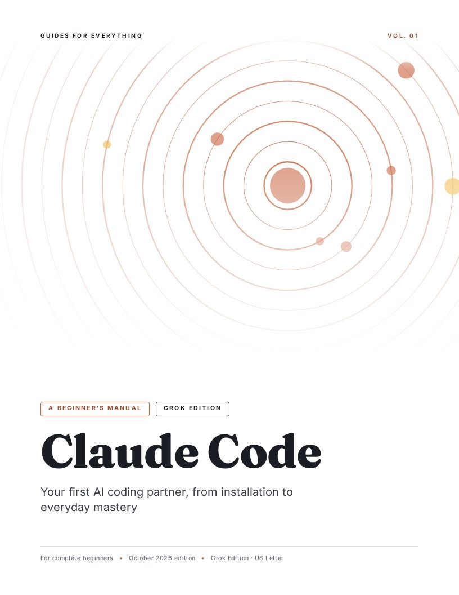
Claude Code, Grok Edition
Your first AI coding partner, from installation to everyday mastery
Concise edition, revised and fact-checked by Grok Bot in GrokAllManualsV1.
-
-
Vol. 02
GitHub
Claude Edition: 146 pagesGrok Edition: 69 pages
-

GitHub, Claude Edition
Save, share, and collaborate on your work, with Git explained from zero to confident
Expanded edition written by Claude (Anthropic's AI) in Claude Code and published in GuidesForEverything PR #4.
-
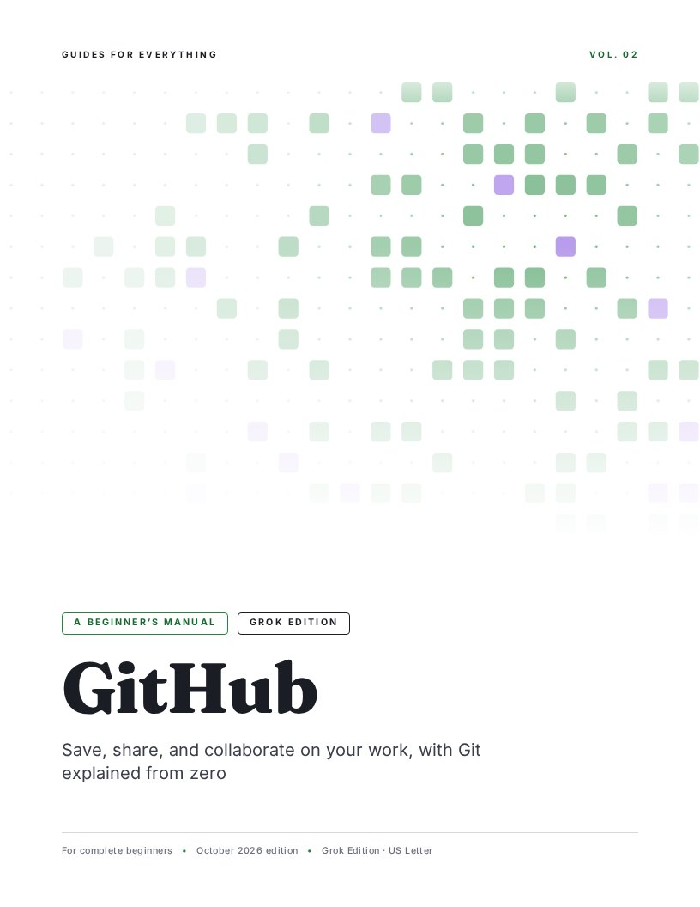
GitHub, Grok Edition
Save, share, and collaborate on your work, with Git explained from zero
Concise edition, revised and fact-checked by Grok Bot in GrokAllManualsV1.
-
-
Vol. 03
Vibe Coding
Claude Edition: 142 pagesGrok Edition: 61 pages
-

Vibe Coding, Claude Edition
Build real apps, websites, extensions and tools by describing them in plain English
Expanded edition written by Claude (Anthropic's AI) in Claude Code and published in GuidesForEverything PR #4.
-
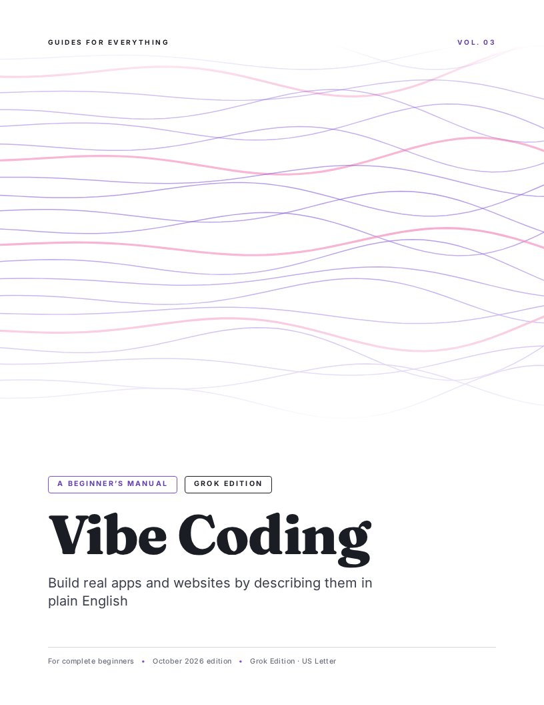
Vibe Coding, Grok Edition
Build real apps and websites by describing them in plain English
Concise edition, revised and fact-checked by Grok Bot in GrokAllManualsV1.
-
-
Vol. 04
Everyday AI Tools
Claude Edition: 129 pagesGrok Edition: 54 pages
-

Everyday AI Tools, Claude Edition
Chat assistants, prompting, research, writing, images, video, voice, phones, agents, privacy, and everyday recipes, explained for complete beginners
Expanded edition written by Claude (Anthropic's AI) in Claude Code and published in GuidesForEverything PR #4.
-
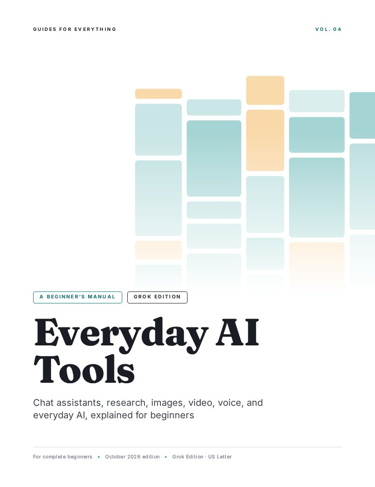
Everyday AI Tools, Grok Edition
Chat assistants, research, images, video, voice, and everyday AI, explained for beginners
Concise edition, revised and fact-checked by Grok Bot in GrokAllManualsV1.
-
-
Vol. 05
MCP
Claude Edition: 134 pagesGrok Edition: 56 pages
-

MCP, Claude Edition
The Model Context Protocol, the universal way to plug AI into your apps, files, and tools, explained from zero to building and deploying your own servers
Expanded edition written by Claude (Anthropic's AI) in Claude Code and published in GuidesForEverything PR #4.
-
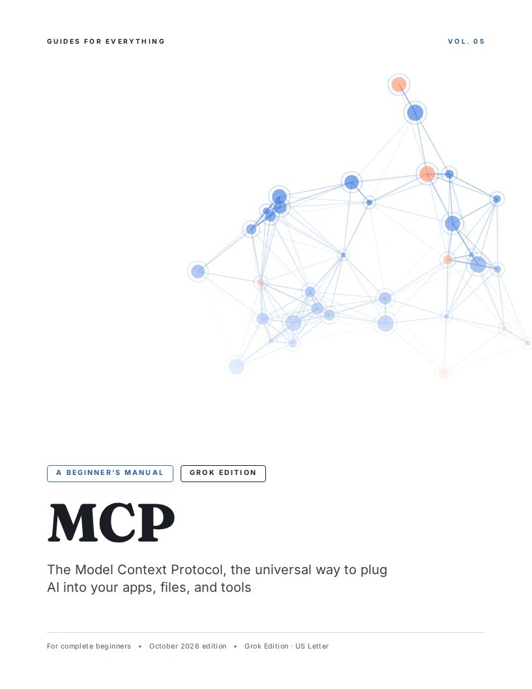
MCP, Grok Edition
The Model Context Protocol, the universal way to plug AI into your apps, files, and tools
Concise edition, revised and fact-checked by Grok Bot in GrokAllManualsV1.
-
-
Vol. 06
n8n
Claude Edition: 177 pagesGrok Edition: 59 pages
-

n8n, Claude Edition
Automate your work and build AI agents, visually, one node at a time, from your first click to your own server
Expanded edition written by Claude (Anthropic's AI) in Claude Code and published in GuidesForEverything PR #4.
-
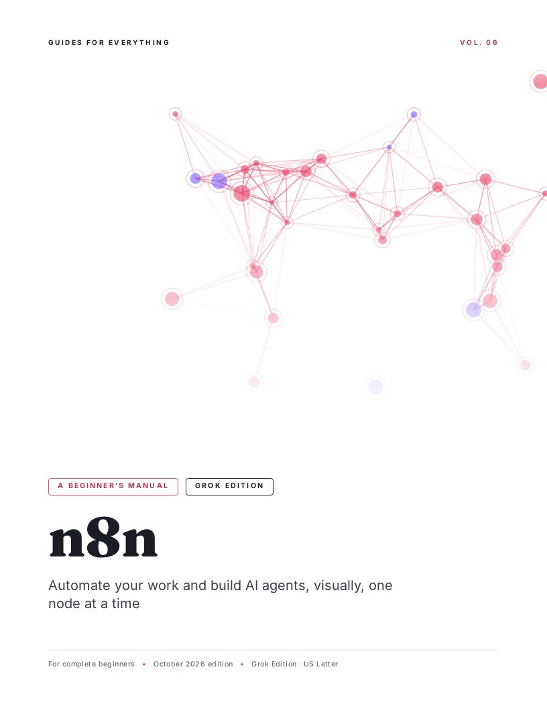
n8n, Grok Edition
Automate your work and build AI agents, visually, one node at a time
Concise edition, revised and fact-checked by Grok Bot in GrokAllManualsV1.
-
-
Vol. 07
Notion
Claude Edition: 160 pagesGrok Edition: 52 pages
-

Notion, Claude Edition
One workspace for notes, docs, projects, and databases, with AI built in. A complete beginner's manual
Expanded edition written by Claude (Anthropic's AI) in Claude Code and published in GuidesForEverything PR #4.
-
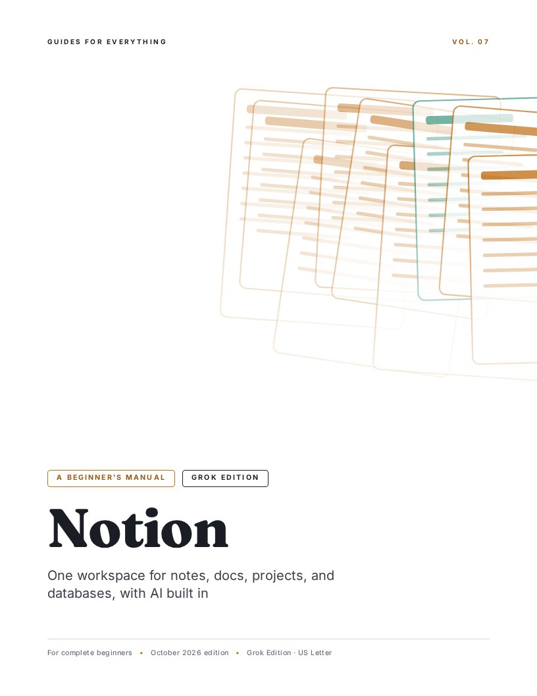
Notion, Grok Edition
One workspace for notes, docs, projects, and databases, with AI built in
Concise edition, revised and fact-checked by Grok Bot in GrokAllManualsV1.
-
-
Vol. 08
Maximum Autonomy
Claude Edition: 111 pagesGrok Edition: 82 pages
-

Maximum Autonomy, Claude Edition
Every setting, flag, config file, and token choice for hands-off AI agents, tool by tool
Expanded edition written by Claude (Anthropic's AI) in Claude Code and published in GuidesForEverything PR #4.
-
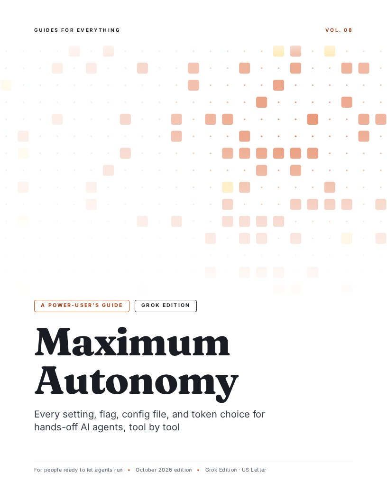
Maximum Autonomy, Grok Edition
Every setting, flag, config file, and token choice for hands-off AI agents, tool by tool
Concise edition, revised and fact-checked by Grok Bot in GrokAllManualsV1.
-
-
Vol. 09
AI Tools, Connectors & MCP Directory
Claude Edition: 133 pagesGrok Edition: 57 pages
-

AI Tools, Connectors & MCP Directory, Claude Edition
More than 1,500 AI tools, connectors, and MCP servers, sorted into 23 categories, each with a plain-English description and a price label
Expanded edition written by Claude (Anthropic's AI) in Claude Code and published in GuidesForEverything PR #4.
-
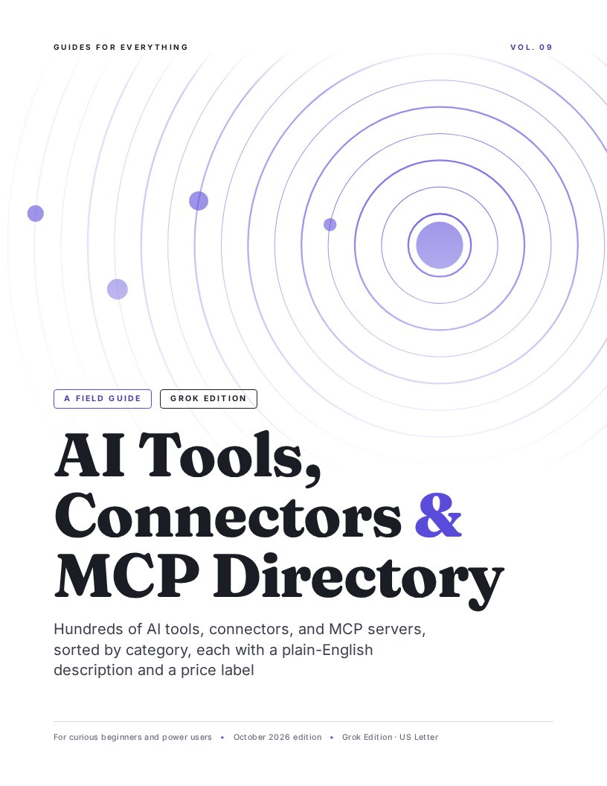
AI Tools, Connectors & MCP Directory, Grok Edition
Hundreds of AI tools, connectors, and MCP servers, sorted by category, each with a plain-English description and a price label
Concise edition, revised and fact-checked by Grok Bot in GrokAllManualsV1.
-
-
Vol. 10
Autonomous AI Trading
Claude Edition: 110 pagesGrok Edition: 39 pages
-

Autonomous AI Trading, Claude Edition
Build, test, and run a hands-off trading bot, step by step
Expanded edition written by Claude (Anthropic's AI) in Claude Code and published in GuidesForEverything PR #4.
-
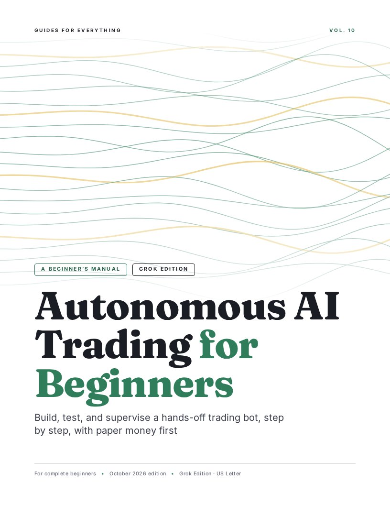
Autonomous AI Trading for Beginners, Grok Edition
Build, test, and supervise a hands-off trading bot, step by step, with paper money first
Concise edition, revised and fact-checked by Grok Bot in GrokAllManualsV1.
-
Vols 11–21: Grok Edition
New volumes written by Grok Bot, with facts checked against official sources.
-
Vol. 11
Running AI Locally
Grok Edition
Ollama, LM Studio, Jan and llama.cpp on your own PC, with honest GPU and memory tuning for beginners
Written by Grok Bot, with facts checked against official sources in October 2026.
-
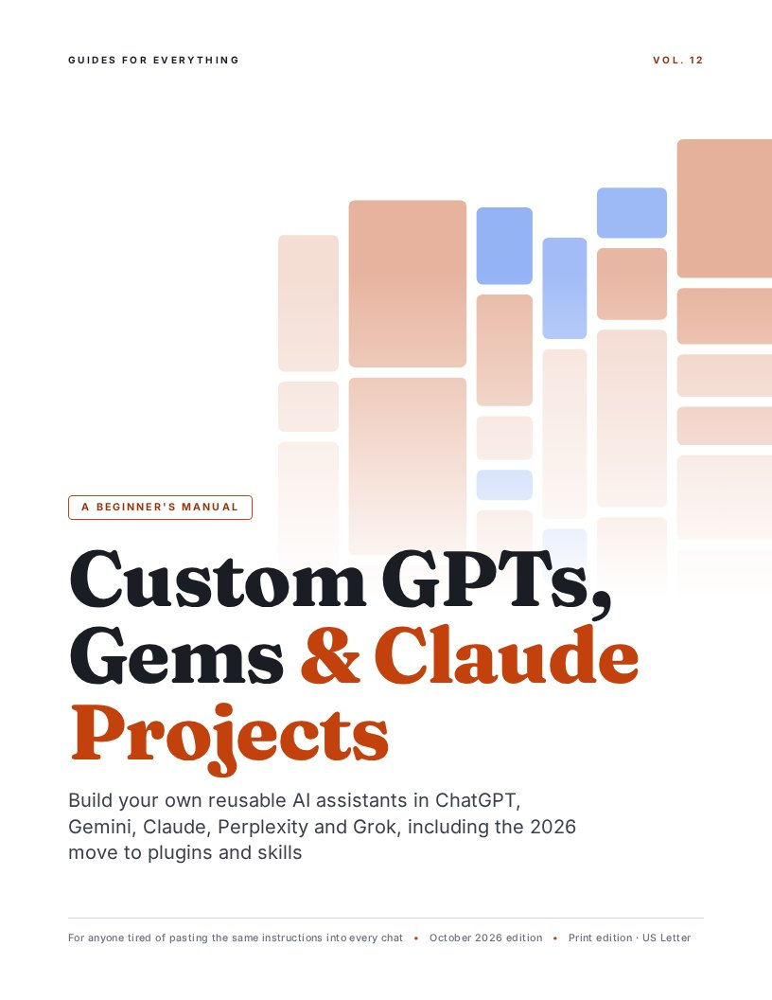
Vol. 12
Custom GPTs, Gems & Claude Projects
Grok Edition
Build your own reusable AI assistants in ChatGPT, Gemini, Claude, Perplexity and Grok, including the 2026 move to plugins and skills
Written by Grok Bot, with facts checked against official sources in October 2026.
-
Vol. 13
AI Agents & Multi-Agent Workflows
Grok Edition
Hand off real work to ChatGPT Work, Codex, Claude Cowork, Gemini tasks, Perplexity Computer and Grok Bot, and fan one question out to five AIs at once
Written by Grok Bot, with facts checked against official sources in October 2026.
-
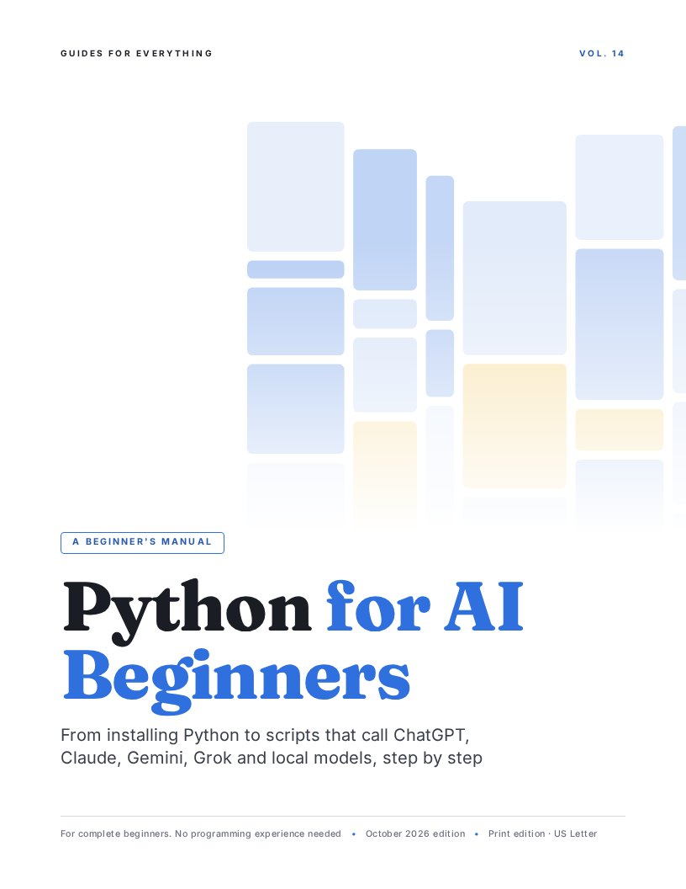
Vol. 14
Python for AI Beginners
Grok Edition
From installing Python to scripts that call ChatGPT, Claude, Gemini, Grok and local models, step by step
Written by Grok Bot, with facts checked against official sources in October 2026.
-
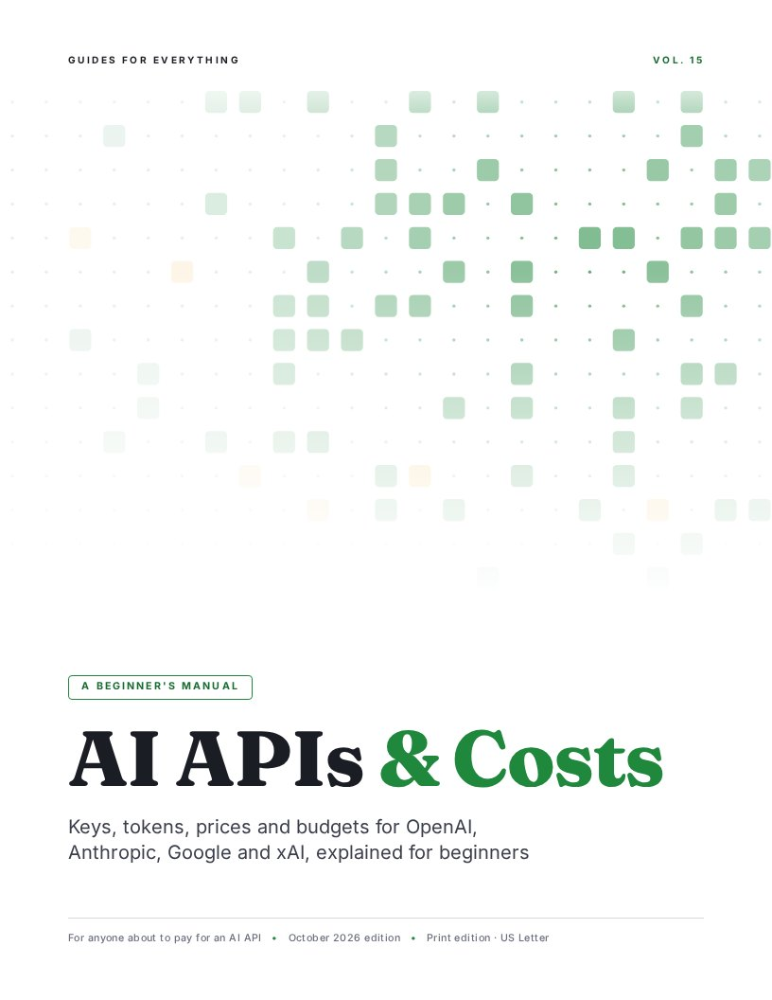
Vol. 15
AI APIs & Costs
Grok Edition
Keys, tokens, prices and budgets for OpenAI, Anthropic, Google and xAI, explained for beginners
Written by Grok Bot, with facts checked against official sources in October 2026.
-
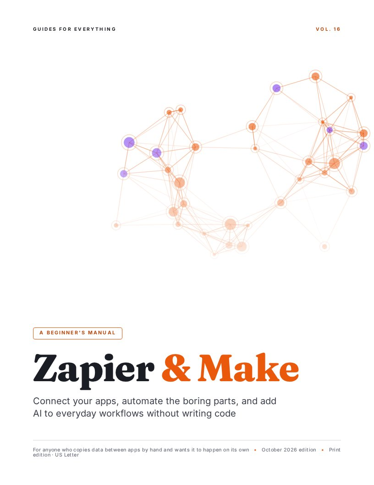
Vol. 16
Zapier & Make
Grok Edition
Connect your apps, automate the boring parts, and add AI to everyday workflows without writing code
Written by Grok Bot, with facts checked against official sources in October 2026.
-
Vol. 17
AI for Personal Finance & Admin
Grok Edition
Budgets, bills, subscriptions, debt plans, tax paperwork and life admin, with your data handled safely
Written by Grok Bot, with facts checked against official sources in October 2026.
-
Vol. 18
AI Privacy & Security
Grok Edition
Control what AI companies keep, protect your accounts, and use chatbots, connectors and agents without getting burned
Written by Grok Bot, with facts checked against official sources in October 2026.
-
Vol. 19
AI for Healthcare Workers
Grok Edition
Save time on documentation, letters, patient education and study, while protecting patients and staying inside HIPAA
Written by Grok Bot, with facts checked against official sources in October 2026.
-
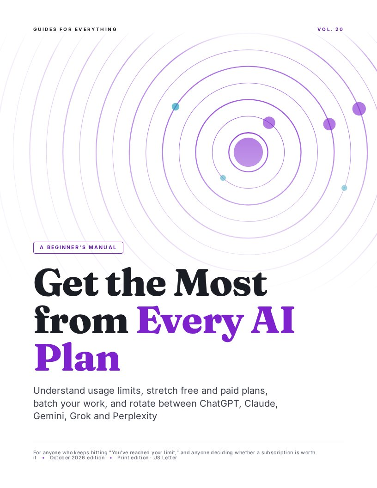
Vol. 20
Get the Most from Every AI Plan
Grok Edition
Understand usage limits, stretch free and paid plans, batch your work, and rotate between ChatGPT, Claude, Gemini, Grok and Perplexity
Written by Grok Bot, with facts checked against official sources in October 2026.
-
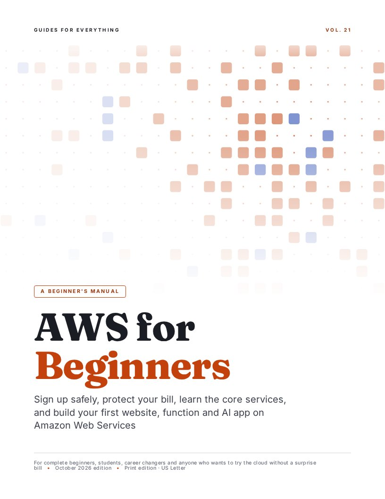
Vol. 21
AWS for Beginners
Grok Edition
Sign up safely, protect your bill, learn the core services, and build your first website, function and AI app on Amazon Web Services
Written by Grok Bot, with facts checked against official sources in October 2026.
No guides match that search yet. Try another title or topic.
Built for the moment it finally clicks.
New tools can feel like a whole new language. Our manuals make the first steps feel possible, with jargon translated, examples you can follow, and practical details grounded in official documentation.
Useful on screen. Lovely on paper.
Read in your browser or download a carefully typeset PDF. Each volume includes a table of contents, a glossary, clear steps, and print-friendly white pages made for real-world learning.
Current enough to be useful.
Each guide shows when its facts were checked. Since tools change quickly, we point readers back to official sources whenever the screen has moved on.